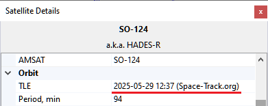
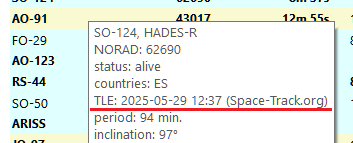
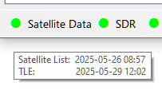

Satellite Data
Data Sources
SkyRoof obtains satellite date from several sources:
SatNOGS DB is the main source of satellite data. It is a frequently updated, crowd-sourced dataset that contains detailed information about all satellites transmitting in the Ham bands;
JE9PEL Satellite List is another dataset with information about the satellites, maintained by Mineo Wakita JE9PEL, that, in particular, includes the callsigns of the satellites. This dataset presents the frequencies in an undocumented format, so its data are included in the SkyRoof database only FYI.
LoTW - The ARRL LoTW service accepts satellite QSO only if the satellite abbreviation is one of those published on their web site. These abbreviations are stored in a file in the Data folder, you can view them in the Satellite Details window.
AMSAT Live OSCAR Satellite Status Page accepts satellite observations with their own satellite abbreviations, these abbreviations are stored in a file in the Data folder.
TLE
The satellite orbit elements (TLE data) are downloaded from SatNOGS DB.
SatNOGS obtains these data from different sources and makes the latest and most reliable data available on their web site. The source of TLE and its creation time are shown in the Satellite Details window or panel:

and in the mouse tooltip of the satellite:

Automatic Updates
SkyRoof automatically downloads the satellite list every 7 days, and TLE data every 24 hours.
The mouse tooltip of the Satellite Data label on the status bar shows the last download time:

The light next to the label turns yellow if the satellite data are not up to date.
Manual Updates
In addition to automatic downloads, the data may be manually downloaded at any time using the Tools / Download All Satellite Data and Tools / Download Only TLE menu commands.
Loading TLE from File
If your system is not connected to the Internet, you can load TLE data from a local file using the Tools / Load TLE from File menu command. Two TLE formats are supported:
- .json - TLE data from the SatNOGS web site, recommended (download);
- .txt - 3-line TLE data in a text file, available from many sources, e.g. CelesTrak (download).
Note that TLE import cannot add new satellites, it only loads orbital elements for the satellites already in the database.
AMSAT Satellite Status
AMSAT Live OSCAR Satellite Status Page is a crowd-sourced, real-time Ham satellite status page.
Posting Status Data
You can post your satellite status observations the the AMSAT web site either by filling the submission form on their site, or using the right-click menu of the satellite labels on the Frequency Scale. A valid Ham callsign must be entered in the Settings window for this function to work.
Downloading Status Data
Set the Amsat Satellite Status / Enable option in the Settings window to true to enable automatic downloads of the
satellite status information from the AMSAT web site. The statuses are shown on the Current Group
panel, the green and red icons represent the active and inactive status respectively.
Satellite status data are downloaded once an hour. You can manually download it at any time using the Tools / Download AMSAT Statuses menu command.